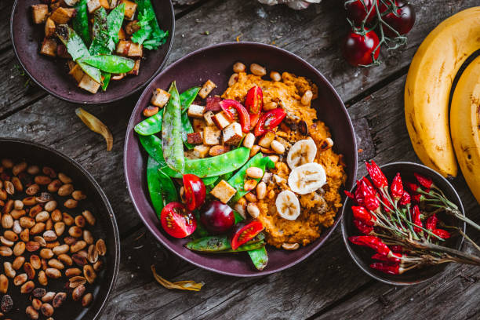

This is our menu of currys.

Food Allergies And Intolerances: Please Be Advised Some Of Our Dishes May Contain The Following Allergens: Gluten, Milk, Soya, Egg, Fish, Lupin, Celery, Peanut, Tree Nuts, Sesame, Mustard, Sulphites, Molluscs, Crustaceans. Please Speak To A Member Of Staff When Ordering If You Have An Allergy.

ONION BHAJEE
Price: £ 3.12
Sliced onion mixed with gramflour & spiced - deep fried
PRAWN PURI
Prawn cooked with spices & herbs over crispy bread
price: 3.75
SOMOSA
Minced meat spiced and stuffed in thin pasty
price:£3.45
CHICKEN TIKKA (ST)
price: 4.12
Diced chicken marinated in mild spices & barbecued in a clay oven
SHEEK KABAB
price: 4.12
Minced lamb with onions & special herbs cooked in a clay oven
CHEF’S SPECIALITIES
TIKKA MASALA
price 8.34
Diced Chicken rosted on skewers in Tandoori charcoal oven & then cooked in special sauce with yoghurt & cream, granished with tomatoes & cucumber (contains nuts)
LAMB TIKKA MASALA
price£5.12
Diced Lamb roasted on skewers in tandoori charcoal oven & then cooked in special sauce with yoghurt & cream, garnished with tomatoes & cucumber (contains nuts)
GANGES SPECIAL CURRY
price 11.23
Chicken cooked with king prawns & egg in medium hot spices
TANDOORI KING PRAWN MASALA
Price £5.12
Charcoal grilled king prawn cooked in oriental spices with cream & butter to Ganges own special recipe (mild, contains nuts)
GARLIC MURUG
price 9.33
Chicken tikka cooked with garlic, prepared to Ganges special recipe (medium strength)
BUTTER CHICKEN
price £3.23
Chicken Tikka cooked with Chef’s special mild sauce topped with butter (contains nuts)
TANDOORI CHICKEN
price£3.12
Tender chicken marinated in our own recipe & barbecued over charcoal in a clay oven
CHICKEN TIKKA
price £12.32
Mildly marinated diced chicken roasted on skewers in the Tandoori
TANDOORI MIXED GRILL
price £4.22
Chicken tikka, lamb tikka, tandoori chicken, sheek kebab & onion bhajee, served with green salad & nan bread